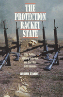

<body bgcolor="#FFFFFF" text="#000000" link="#0000FF" vlink="#CC0000" alink="#CC0000"><center><hr width="350" size="1" align="center" noshade>A chilling examination into why states kill<hr width="350" size="1" align="center" noshade><p><a href="https://cdcshoppingcart.uchicago.edu/Cart/ChicagoBook.aspx?ISBN=9781566393911&&PRESS=temple" target="_top">Buy this book!</a> | <a href="https://cdcshoppingcart.uchicago.edu/Cart/Cart.aspx?PRESS=temple" target="_top">View Cart</a> | <a href="https://cdcshoppingcart.uchicago.edu/Cart/Cart.aspx?PRESS=temple" target="_top">Check Out</a></p><p></p></center><!--none//--><h1>The Protection Racket State</h1>
<H2>Elite Politics, Military Extortion, and Civil War in El Salvador</H2>
<h3>William Stanley</h3>
<P>cloth 1-56639-391-4 $90.50, Jun 96, <FONT COLOR=#990033>Out of Stock Unavailable</FONT>
<br>paper 1-56639-392-2 $39.95, Jun 96, <FONT COLOR=#990033>Available</FONT>
<br>Electronic Book 1-43990-549-5 $39.95 <FONT COLOR=#990033>Out of Stock Unavailable</FONT>
<BR> 344 pp
6x9
4&nbsp;tables 1&nbsp;map(s)
</P><p>In 1932 security forces in El Salvador murdered 25,000 peasants and workers. Between 1978 and 1991 the Salvadoran government killed an additional 50,000 civilians. Death squads maimed and tortured their victims, who included labor organizers, priests, and teachers. By the later months of 1980, government forces were slaughtering 1,000 civilians a month. Most of those killed were poor or worked with the poor. In per capita terms Salvadoran state terror was among the worst in the hemisphere.
<p>States have killed more people than have rebellions, but we know very little about what factors influence this genocide. Why do states kill? In this provocative and chilling book, William Stanley demonstrates that the Salvadoran military state was essentially a protection racket. It offered protection to the elites from civilian uprising and in return received a concession to govern. This protection took the form of wide-scale murder. As Stanley puts it, "State violence was a currency of relations between state and non-state elites."
<p>There are valuable lessons in this book for all those concerned with state-sponsored terror. It indicts the United States for having strengthened the might of the Salvadoran military. It challenges conventional wisdom about governments and repression and shows state-sponsored violence as much more than just a response to opposition.
<BR>&nbsp;<h2>Excerpt</h2><P>Excerpt available at <a href="http://www.temple.edu/tempress">www.temple.edu/tempress</a></p>
<BR>&nbsp;<h2>Reviews</h2>
<p><i>"Stanley's book is a welcome addition to the literature on state-sponsored violence. ...well worth reading for the lessons it provides on power politics, lessons which have obvious applicability to other countries in which corruption and violence among state elites is the norm."</i>
<br>&#151<b><i>The American Political Science Review</i></b>
<BR>&nbsp;<h2>Contents</h2><P>
<p>Acknowledgments
<br>Introduction
<br>1. Self-Defense, Class Oppression, and Extortion: Alternative Views of State Violence
<br>2. Antecendents: the <I>Matanza</I> and the Establishment of Military Rule
<br>3. The Failure of Institutional Military Rule
<br>4. Experiments in State Terrorism: Repression and Polarization under Carlos Romero
<br>5. The Reformist Coup and the First Revolutionary Governing Junta
<br>6. Descent into Mass Murder
<br>7. Breaking the Protection Racket: From War to Peace
<br>Conclusion
<br>Appendix A
<br>Appendix B
<br>Appendix C
<br>Abbreviations and Acronyms
<br>Notes
<br>References
<br>Index
</P><BR>&nbsp;<H2>About the Author(s)</H2>
<table><tr><td valign="top"><img src="/tempress/authors/1055_au.gif" height="90" width="75"></td><td width="100%" valign="middle"><p><B>William Stanley </B>is Assistant Professor of Political Science at the University of New Mexico.</P></td></tr></table>
<BR><H2>Subject Categories</H2>
<p><A HREF="/tempress/political.html" TARGET="_top">Political Science and Public Policy</a>
<BR><A HREF="/tempress/latin.html" TARGET="_top">Latin American/Caribbean Studies</a>
</p>
<p align="center"><a href="https://cdcshoppingcart.uchicago.edu/Cart/ChicagoBook.aspx?ISBN=9781566393911&&PRESS=temple" target="_top">Buy this book!</a> | <a href="https://cdcshoppingcart.uchicago.edu/Cart/Cart.aspx?PRESS=temple" target="_top">View Cart</a> | <a href="https://cdcshoppingcart.uchicago.edu/Cart/Cart.aspx?PRESS=temple" target="_top">Check Out</a></p><p><font face="Arial" size="1"><a href="copyright.html" onMouseOver="window.status='Web Copyright Policy';return true;" onMouseOut="window.status=''" title="Web Copyright Policy">&copy;</a> 2015 <a href="http://www.temple.edu" target="new" onMouseOver="window.status='Link to Temple University home page';return true;" onMouseOut="window.status=''" title="Link to Temple University home page">Temple University</a>. All Rights Reserved. http://www.temple.edu/tempress/titles/1055_reg.html</font></p>